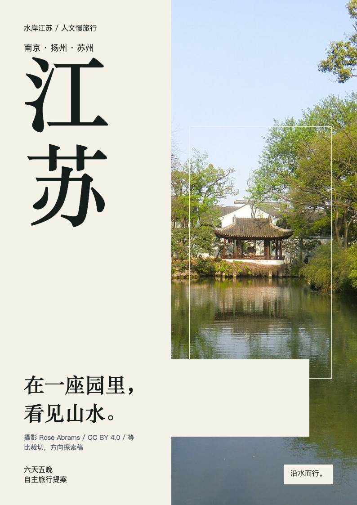
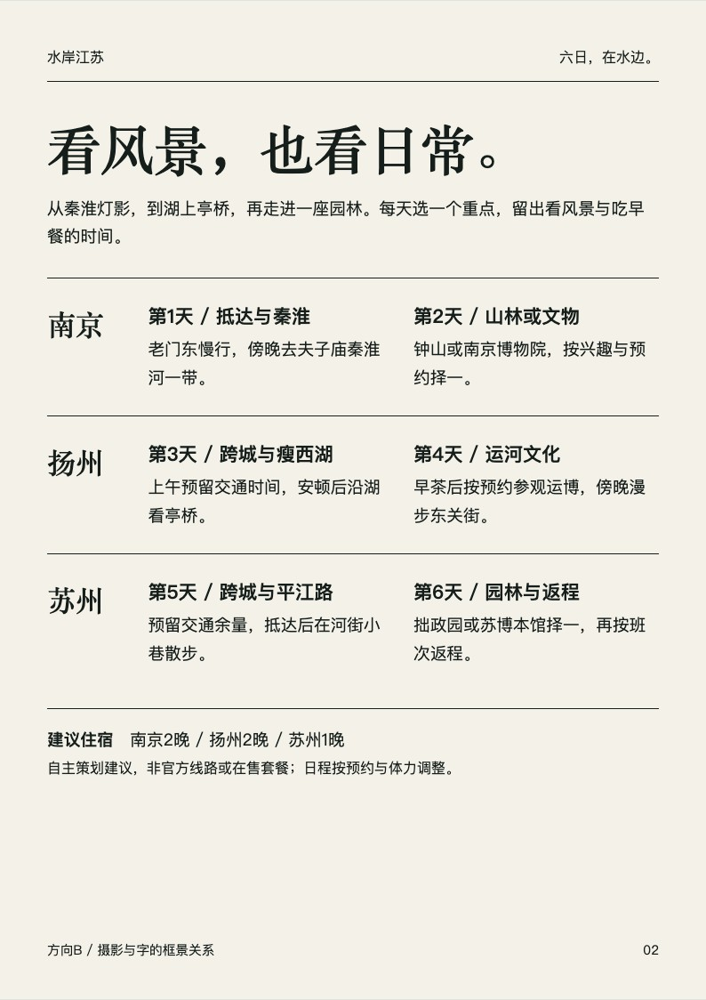

V1 / 资料编排

完成了资料组织与可读性，但没有足够鲜明的主题视觉。
保留南京—扬州—苏州的路线与大字阅读要求，比较主视觉、排字和信息页的延续方式。
查看当前六页 HTML 手册完成了资料组织与可读性，但没有足够鲜明的主题视觉。

用水线建立记忆点；大胆黑体与版画形成对比，水线延续到三城行程。

以汉字尺度与园林纵深形成对读；内页采用更安静的文字秩序。


当前由作者暂选 A 扩展全册，因为水线能同时进入封面和路线信息。B 保留为两页可修改探索稿；这不代表用户已认可 A，或已证明 skill 的普遍审美能力。
A 为内置 ImageGen 生成的概念插画，非实景地图，完整提示词。B 使用 Rose Abrams 的拙政园摄影，原作 / CC BY 4.0；缩放、裁切与排版。上一版封面使用 Jackiejackie123123 的五亭桥摄影，原作 / CC BY-SA 4.0。摄影与其裁切展示保留原许可；不表示作者背书。内容与素材说明。